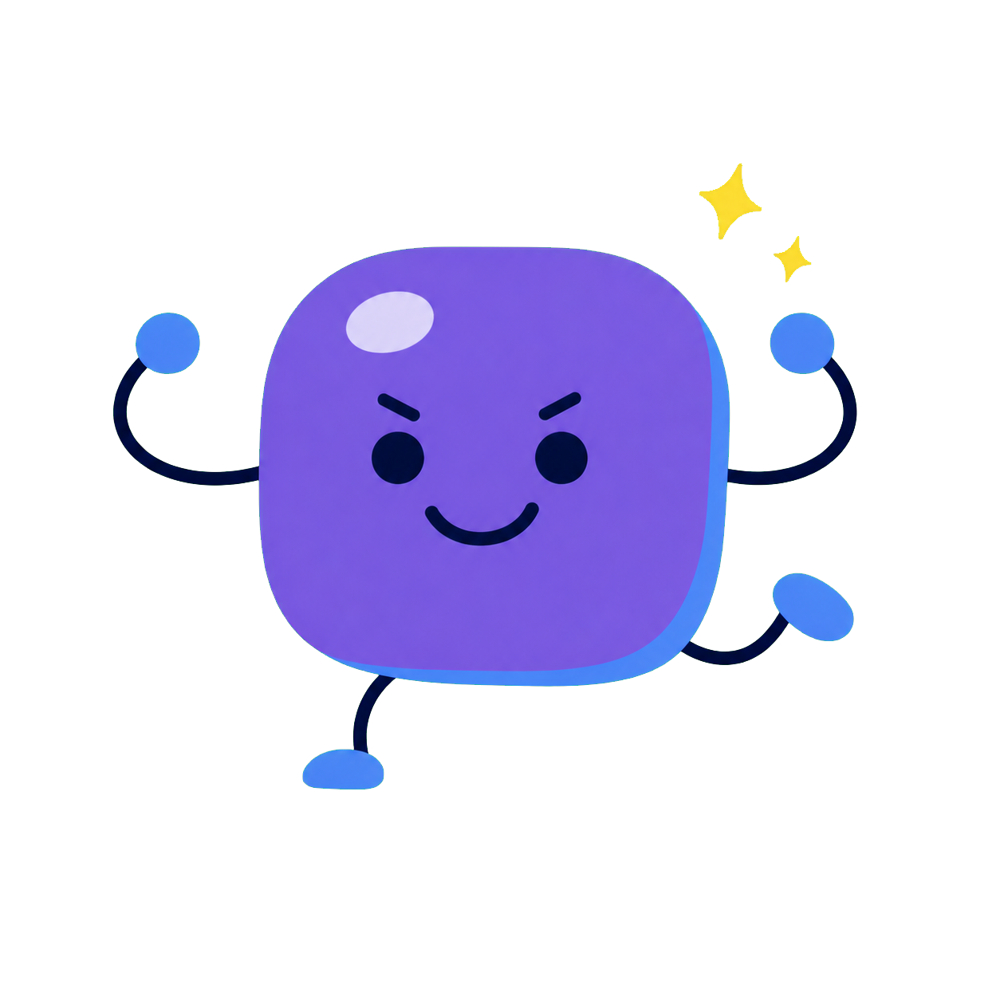

JELLY SEA DETECTIVES · TITANIC CASE 01
The Mystery of
the Unsinkable Claim
조선소 사무실에 숨은 단서 세 개를 찾아, 「가라앉을 수 없다」는 기록을 검증하세요.
1 조선소 사건 기록
SHIPYARD LOG
2What are we looking for?
Choose the goal for this case.
Choose the one problem we need to solve.
MISSION 1 · FIND THE VAULT CLUES
0 / 3 단서
숨은 문서를 찾아 금고를 열어요.
MEMORY VAULT
1 / 3
기억을 붙들고 금고 다이얼을 맞춰요.
잠그기 전에 본 문장을 떠올리며 하나를 골라요.
4 BOSS · TRUE OR FAKE?
Is this record TRUE or FAKE?
5 완성된 정보글을 읽어요
How Evidence Tested the Unsinkable Claim
SENTENCE 1 OF 6
NOW READ THE WHOLE PARAGRAPH
CHECK YOURSELF · 문단을 읽고 나서
읽은 느낌을 하나 골라요. 어느 것을 골라도 괜찮아요.
6 LISTEN AND FIND THE MISTAKE
Listen. One word is written wrong.
소리를 듣고, 다르게 적힌 낱말을 눌러요.
7 JELLY RUN · SPOT THE REAL WORD
Which one is the real word?
뜻을 읽고, 바르게 쓴 낱말 하나를 골라요. 글자를 하나씩 꼼꼼히 봐요.
⭐ 0
⏱ 2:00
소리는 비슷해도 글자가 다른 장난꾸러기 낱말이 섞여 있어요.
9 내 말로 다시 설명해요
What did the evidence show about the unsinkable claim?
세 증거 메모를 보면서 영어로 1~3문장을 써 보세요.
0 / 360
People once believed ____. The evidence showed ____.
완벽한 문장보다, 증거가 들어간 설명이 중요해요.

CASE 01 · SOLVED
안전 증거로
「가라앉을 수 없다」는 기록을 검증했어요!
단서를 읽고 중요한 정보만 남기면, 기억에만 의지하지 않고 더 정확하게 판단할 수 있어요.
찾기→남기기→맞춰 보기